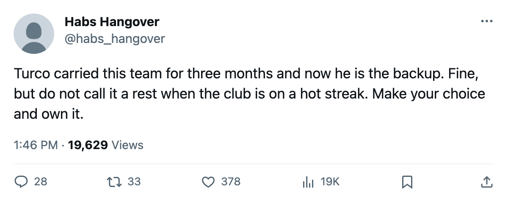

Goalie Watch: Dallas Switched Starters on a 5-Game Win Streak
Bacashihua moved into the G1 slot after Turco carried 18 of 22, and the Stars are 13-4-3 with the league's best goal differential
 Ray CallumSenior correspondent · Home Ice Network
Ray CallumSenior correspondent · Home Ice Network
 Dallas Stars sits atop the Western Conference at 33 points and a league-leading 13 regulation wins, and during the 5-game win streak the club moved Jason Bacashihua87 into the G1 slot, displacing
Dallas Stars sits atop the Western Conference at 33 points and a league-leading 13 regulation wins, and during the 5-game win streak the club moved Jason Bacashihua87 into the G1 slot, displacing  Marty Turco93, who had carried 18 of Dallas Stars's 22 games.
Marty Turco93, who had carried 18 of Dallas Stars's 22 games.
Bacashihua has started 4 games this season. Dallas Stars has outscored opponents 31-23 across its last 10 and holds a plus-14 goal differential, the best mark in the Western Conference.
A club at 5-12-2 swaps netminders because the numbers demand it. A club at 13-4-3, 5 straight without a regulation loss, makes the same move for other reasons: the schedule has asked for it, or the staff wants a fresh start against the next opponent.
The schedule provides the context. The Stars play  Phoenix Coyotes at home on November 25, the 3rd meeting between the clubs this season and the 3rd in Dallas's favor. The season series sits 2-0-0 to Dallas Stars with a 5-3 goal edge.
Phoenix Coyotes at home on November 25, the 3rd meeting between the clubs this season and the 3rd in Dallas's favor. The season series sits 2-0-0 to Dallas Stars with a 5-3 goal edge.
Injuries have thinned the depth behind the crease.  Claude Lemieux72 is out with an elbow and
Claude Lemieux72 is out with an elbow and  Richard Matvichuk72 with a neck, both listed through early December. Dallas Stars has logged 15 injury spells this season and 56 days lost, the fewest among clubs with double-digit spell counts.
Richard Matvichuk72 with a neck, both listed through early December. Dallas Stars has logged 15 injury spells this season and 56 days lost, the fewest among clubs with double-digit spell counts.
The Stars' 6-2 home record is the 3rd-best in the Western Conference, behind  Detroit Red Wings and
Detroit Red Wings and  Nashville Predators. Bacashihua gets the next one in that building.
Nashville Predators. Bacashihua gets the next one in that building.
